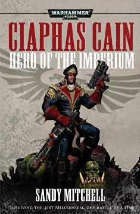

Top 5 Best Sellers
- Eisenhorn: Omnibus
- The Space Wolf: Omnibus
- Night Lords: Omnibus
- Ciaphas Cain: Hero of the Imperium
- Gaunt's Ghosts Series
Eisenhorn: Omnibus

Todos los mundos del Imperio temen a la Inquisición. Son la fuerza justiciera del Emperador y aniquilan la herejía y la corrupción en todas sus formas. Gregor Eisenhorn es uno de ellos, elegido por su fe inquebrantable, su voluntad de hierro y su increíble tenacidad. A pesar de ser un puritano entregado a la causa de la destrucción del Caos y de todos sus oscuros seguidores, incluso él se ve tentado a usar el gran poder del Caos. Cuando cruza la frontera, da el primer paso en el peligroso camino que podría llevarlo a convertirse en aquello que ha jurado destruir.
The Space Wolf: Omnibus
Narra los orígenes del que acabará convirtiéndose en leyenda del capítulo de los lobos espaciales, Ragnar Blackmane; explica con gran detalle la vida de este personaje desde el momento en que es todavía un hombre corriente y tras caer en el campo de batalla es recuperado por los lobos espaciales para que vuelva de entre los muertos y entre a formar parte de sus filas. La trilogía narra tanto sus últimos días como hombre, como sus inicios como lobo espacial (detallando la metamorfósis que va sufriendo conforme avanza en su instrucción para convertirse en lobo espacial; la cual pasa, por poner un par de ejemplos, por el crecimiento de los colmillos o el superdesarrollo de algunos de sus sentidos como el olfato), sobre cómo sale adelante superando cada prueba en su aprendizaje hasta el devenir de y cómo destaca en todas y cada una de sus primeras misiones. Especial mención a cómo (a lo largo de los tres tomos) su relación con su mayor rival en su vida pasada (Strybjorn, rescatado igual que él y al mismo tiempo del mismo campo batalla, para entrar a formar parte del mismo capítulo de marines espaciales) cambia, transformando ambos finalmente ese odio mutuo que sienten uno por otro por un sentimiento de camaderia que irá creciendo conforme afrontan nuevos peligros en cada nueva misión y que los llevará a luchar codo con codo hasta el punto de estar dispuestos uno y otro a dar la vida por su hermano lobo. (*) ¿Que qué es un lobo espacial?... añadir a la coctelera uno de los vikingos de "Los devoradores de cadáveres" de Chrichton, el lobo huargo de Jon Nieve y un infantería móvil de los "Starship troopers" de Heinlein, agitar bien, agitar un poco más porque estos ingredientes tienen tela... y el resultado es un marine espacial, concretamente un lobo espacial.
Night Lords: Omnibus

Impulsados por su odio hacia el Falso Emperador, los Amos de la Noche acechan en las sombras de la galaxia, en busca eterna de venganza por la muerte de su primarca. Guiada por las visiones del profeta Talos, una partida de guerra de esta siniestra Legión lucha por sobrevivir en una guerra constante contra las fuerzas del Imperio. Pero cuando entran en conflicto con otros renegados y son perseguidos por los Eldar de Craftworld Ulthwe, los Amos de la Noche se encuentran regresando a la escena de su mayor derrota y envueltos en una batalla que posiblemente no puedan ganar.
Ciaphas Cain: Hero of the Imperium
El comisario Ciaphas Cain -héroe del Imperio y famoso en todo el sector por su coraje y valentía- es enviado para ayudar a mantener el orden en un mundo en los límites del espacio Tau. Pero cuando el embajador extranjero es asesinado, Cain y su regimiento de vahallanos se ven envueltos en una guerra. Mientras la Guardia Imperial lucha por contener una insurrección civil de ámbito mundial ¿podrá el astuto comisario identificar al verdadero villano antes de que el Imperio pierda para siempre el dominio de ese planeta?
Gaunt's Ghosts Series
Fantasmas de Gaunt (Gaunt's Ghosts en el original) es una serie de novelas escritas por Dan Abnett, encuadradas en el subgénero de la ciencia ficción militar y cuya acción se desarrolla en el universo de Warhammer 40.000. La serie abarca, hasta 2014, 15 novelas y diversas antologías y material de trasfondo que documentan los esfuerzos de Los Primeros y Únicos de Tanith, también llamados Los fantasmas de Gaunt, un regimiento de exploradores de infantería de la Guardia Imperial de gran habilidad pero poco apreciado por sus superiores, durante la Cruzada de los Mundos de Sabbat. El protagonista es el coronel comisario Ibram Gaunt, uno de los pocos comisarios políticos del Imperio a los que se les ha concedido oficialmente el mando de un regimiento. Aunque Gaunt es el personaje principal, la perspectiva desde la que se narran las novelas cambia con regularidad para presentar al lector un punto de vista más amplio de lo que sucede en la Cruzada; normalmente se cuenta desde el punto de vista Imperial aunque en ocasiones la perspectiva pasa a ser la de sus antagonistas, las fuerzas del Caos. En las novelas se alude a otras series de Dan Abnett como Eisenhorn y Ravenor y ha dado lugar a diversas obras derivadas.